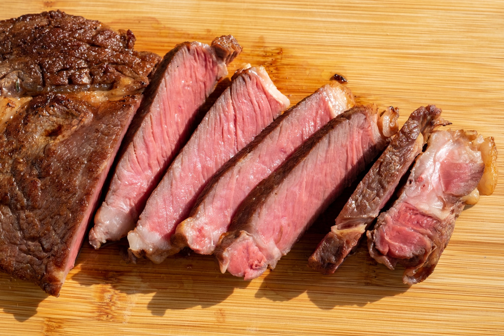

Back to Homepage

Description
Making use of the sous vide is for an easy preparation, and once done you can just sear it! The method, sous vide is literally French for "under vacuum". The term is fancy, but the method and work is fairly simple.
Ingredients
- 1-1.5 inch steak (I use the H-mart ribeye chuck)
- 2 Tbsp of unsalted butter
- Salt and Pepper to taste (I like to use Lawry's Seasoning to spice things up)
- 1 sprig of rosemary
Basting
- 2 Tbsp of unsalted butter
- Crushed garlic cloves and choice of herbs
Cooking
- Using Sous Vide circulator in a large bowl of water, set the sous vide to 129 Degrees F.
- Season the steak generously on both sides and put into vacuum-sealed bag with 2 tbsp of butter and the sprig of rosemary.
- Place the steak into the meat jacuzzi for 1-2 hours
- Pre-heat skillet over medium-high heat with high heat oil (I use olive oil, because it is available)
- Sear the steak at high heat for 1 min each side, and baste with butter, garlic cloves and other herbs for 20-30 secs each side
- Pull steak out once a nice coloration has formed and let rest for 8 mins
- Enjoy!